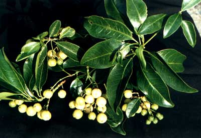

Acronychia
pedunculata
(l.) Miq.
----- Taxonomic Details

----- Correct Name
----- Classification
----- Synonyms
----- Common Names
Other Biological Details
----- Habit and Habitat
----- Diagnostic Features
----- Reproductive Biology
---------- Breeding System
---------- Phenology
---------- Pollinators
---------- Seed Biology
----------Seed Germination
------ Cultivation
----- Major Pests and Diseases
Economic Potential and Uses
----- Parts Used
----- Uses
----- Harvesting Practices
----- Produce and Products
----- Chemistry
----- Processing Techniques
----- Other uses
----- Economic Potential to the
Country
----- Export Potential
Miscellaneous Information
Literature
Taxonomic
Details
Correct Name : Acronychia pedunculata (L.)
Miq.
Family :
Rutaceae
Synonyms : Acronychia barberi; Acronychia
laurifolia;
Cyminosma pedunculata; Jambolifera pedunculata;
Common Names :
Malayalam: Mutta-nari,Muttanari, Orilatheeppettimaram, Verukutheeni, Vidu-kanalei,
Vidukanali,
Tamil: Kattukanni Muttainari
Kannada: Sone mavu
Back to Top
Other
Biological Details
HABIT & HABITAT:
It is found in evergreen forest,
Forests, Ghats, Higher slopes of the ghats in deciduous forest, hilly region,
moist deciduous forest, Primary & Secondary forests, Ravines and shola and
in lower Himalayas, western ghats
BioticZone: Alpine Western Himalaya, Tropics, West Coast and Western Ghats.
Soil: It prefers humus rich soil.
Availability :
Misc: ambolighat, Chandanathode, Charmadi ghats, Dubare, Five falls, Gangavara,
Irpu, Khleihriat to Sonapur, Kotigehar on the way to Kalhattigiri, Kottur reserve
forests, Main falls, Mid-Palanis, Near streams, Saivila, Nilambur, Shuntiguthi,
Silent Valley, Sunderbans and Syndai - Muktapur.
Country: India, Indomalaysia, Sri Lanka and Taiwan,
Zone: East,North East, South and West.
State: Arunachal Pradesh, Karnataka, Kerala, Maharashtra, Meghalaya,Tamil Nadu
and West Bengal.
District: 24 Pargana, Cannanore, Chikmaglore, Coimbatore, DakshinKannada, Hassan,
Jalpaiguri, Jowai, Kameng, Kanyakumari, Kodagu, Kukri, Madurai, Malappuram,
Nilgiri, Palaghat, Palani, Shimoga, Simla, Sindhudurg, Tirunelveli and Uttar Kannada,
Taluk: Palghat,Sawantwadi and Tenkasi,
Status :
Back to Top
DIAGNOSTIC FEATURES
Back to Top
REPRODUCTIVE BIOLOGY
Breeding System :
Phenology :
Flowering occurs during March - November
and also during May-January.
Pollinators:
Seed Biology :
Seed Germination:
Cultivation:
Back to Top
MAJOR PESTS & DISEASES
Pests:
Diseases:
Back to Top
Economic
Potential and Uses
Parts used:
Leaves,
Roots, Bark.
Uses:
- Aromatic oil present in the leaves are used as condiment.
-
In Chinese food medicine the roots,stems,leaves
and fruits are used in the treatment of Diarrhoea,tussis asthma,Skin
Problems ,pain and rheunatism and as an antithyroitic and antihemorrhagic
agent as well as an aphrodisiac.
Harvesting
Practices
Produce and Products
Back to Top
Chemistry
Steam distilate collected from the leaves exhibits significant mortality against
aphid,Aphis crocivora
Koch.An arylketone, 1-[
2',4'-dihydroxy-3',58'-di(3"-methylbut- 2"-enyl)-6-methoxy]
Phenylethanone together with acronylin,acrovestone,bergapten, Beta-amyrin and 3
finoquinolin alkoloides has been isolated from the root bark,exhibits cytotoxic
activity.
The fruit contains an arylketone dimer, 1,1-di-[
2',4',6'-trihydroxy-3'-(1"-oxoethenyl)-5'-(3"-methylbut-2"-enyl)phenyl]-3-methyl
butone, which is an demethyl derivation of acrovestone.
Back to Top
Processing Techniques
Back to Top
Other Uses
-
Bark and roots are
used as fish poison,
Economical
Potential to the country
Back to Top
Export Potential
Back to Top
Miscellaneous
Information
Back to Top
Literature
- Cecil J Saldanha Flora of Karnataka
- Ramachandran V.S. and . Nair V. J Flora of Cannanore
- Sasya
Sahyadri- A CD on Plants of Western Ghats, 2003, K.N. Ganeshaiah.
- The
wealth of India, A Dictionary of Indian Raw Materials and Industrial
Products, Vol. I. A-By, Publications and Information Directorate, CSIR, New
Delhi, India, 1948.
- The Wealth of India ,2000 A dictionary of Indian
Raw Materials and Industrial Products. Raw Materials,First Supplement series Vol:1
A-CI. CSIR. New
Delhi. India.P.21.
Back to Top
.jpg){kind=link}